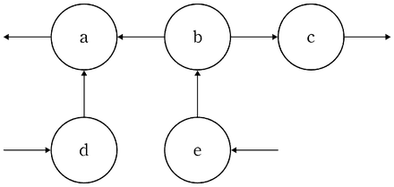

검색 엔진
지문을 먼저 읽고, 이해가 막히는 문단에서 ‘그림으로 보기’를 누르세요. 그림은 문단을 따라 바뀝니다.
1문단인터넷 검색 엔진은 검색어를 포함하는 웹 페이지를 찾아 화면에 보여 준다. 웹 페이지가 화면에 나타나는 순서를 정하기 위해 검색 엔진은 수백 개가 ⓐ넘는 항목을 고려한 다양한 방식을 사용한다. 대표적인 항목으로 중요도와 적합도가 있다.
2문단검색 엔진은 빠른 시간 내에 검색 결과를 보여 주기 위해 웹 페이지들의 데이터를 수집하여 인덱스를 미리 작성해 놓는다. 인덱스란 단어를 알파벳순으로 정리한 목록으로, 여기에는 각 단어가 등장하는 웹 페이지와 단어의 빈도수 등이 저장된다. 이때 각 웹 페이지의 중요도가 함께 기록된다.
3문단㉠중요도는 웹 페이지의 중요성을 값으로 나타낸 것으로 링크 분석 기법으로 측정할 수 있다. 기본적인 링크 분석 기법에서 웹 페이지 A의 값은 A를 링크한 각 웹 페이지들로부터 받는 값의 합이다. 이렇게 받은 A의 값은 A가 링크한 다른 웹 페이지들에 균등하게 나눠진다. 즉 A의 값이 4이고 A가 두 개의 링크를 통해 다른 웹 페이지로 연결된다면, A의 값은 유지되면서 두 웹 페이지에는 각각 2가 보내진다.
4문단하지만 두 웹 페이지가 실제로 받는 값은 2에 댐핑 인자를 곱한 값이다. 댐핑 인자는 사용자들이 웹 페이지를 읽다가 링크를 통해 다른 웹 페이지로 이동하지 않는 비율을 반영한 값으로 1 미만의 값을 가진다. 댐핑 인자는 모든 링크에 동일하게 적용된다. 가령 그 비율이 20%이면 댐핑 인자는 0.8이고 두 웹 페이지는 A로부터 각각 1.6을 받는다. 웹 페이지로 연결된 링크를 통해 받는 값을 모두 반영했을 때의 값이 각 웹 페이지의 중요도이다. 웹 페이지들을 연결하는 링크들은 변할 수 있기 때문에 검색 엔진은 주기적으로 웹 페이지의 중요도를 갱신한다.
5문단사용자가 검색어를 입력하면 검색 엔진은 인덱스에서 검색어에 적합한 웹 페이지를 찾는다. ㉡적합도는 단어의 빈도, 단어가 포함된 웹 페이지의 수, 웹 페이지의 글자 수를 반영한 식을 통해 값이 정해진다. 해당 검색어가 많이 나올수록, 그 검색어를 포함하는 다른 웹 페이지의 수가 적을수록, 현재 웹 페이지의 글자 수가 전체 웹 페이지의 평균 글자 수에 비해 적을수록 적합도가 높아진다. 검색 엔진은 중요도와 적합도, 기타 항목들을 적절한 비율로 합산하여 화면에 나열되는 웹 페이지의 순서를 결정한다.
<보기>는 웹 페이지들의 관계를 도식화한 것이다. 윗글을 바탕으로 <보기>를 이해한 내용으로 적절한 것은? [3점]

그림: 웹 페이지 a, b, c, d, e. d→a, b→a, b→c, e→b 링크와 a, c에서 밖으로 나가는 링크, d, e로 들어오는 링크">원은 웹 페이지이고, 화살표는 웹 페이지에서 링크를 통해 화살표 방향의 다른 웹 페이지로 연결됨을 뜻한다. 댐핑 인자는 0.5이고, d와 e의 중요도는 16으로 고정된 값이다.
(단, 링크와 댐핑 인자 외에 웹 페이지의 중요도에 영향을 주는 다른 요소는 고려하지 않음.)